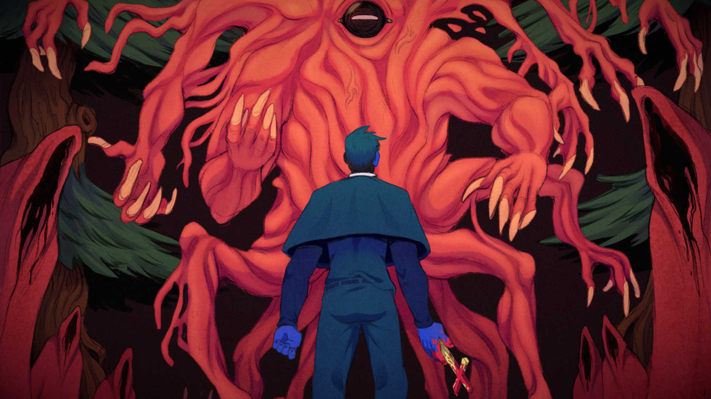
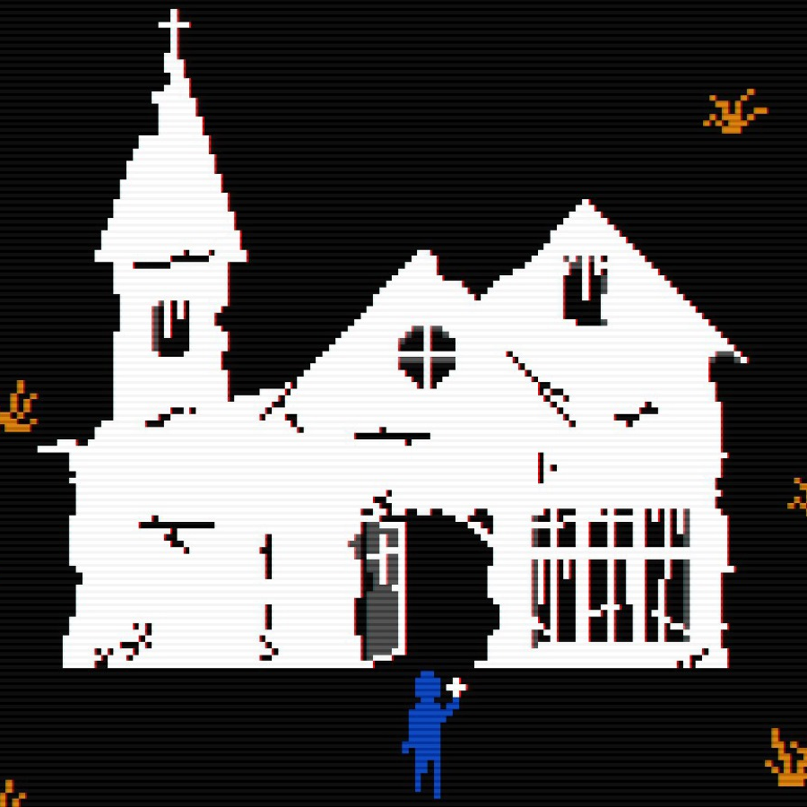
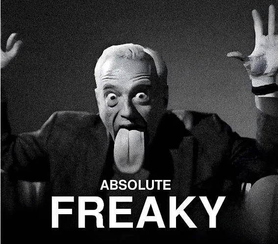

Horror in video games did not begin as a fixed genre—it was formed through limitation, uncertainty, and experimentation. In the mid-1990s, these ideas became structured into what is now recognized as survival horror: a design philosophy built on restriction, vulnerability, and controlled perspective. This era defined how fear could function not just as a theme, but as a system.
With the release of Resident Evil, horror games established a clear identity. The game introduced mechanics that intentionally limited the player—restricted movement, fixed camera angles, and scarce resources. Ammunition was limited, enemies were persistent, and every encounter required consideration. The player was not meant to feel powerful. Instead, they were meant to feel cautious, aware, and constantly at risk. Fear emerged not from what was shown, but from what could happen at any moment.

Around the same time, Silent Hill expanded this foundation by shifting attention toward atmosphere and perception. Its use of fog, sound, and environmental distortion created a space where visibility and understanding were limited. The player was not only navigating physical danger, but also uncertainty. This reinforced a key idea of the era: fear thrives when information is incomplete.
The survival horror definition relied heavily on constraint. Fixed camera angles obscured vision, forcing players to move into spaces they could not fully see. Controls were deliberate and sometimes slow, reinforcing a lack of control rather than mastery. Environments were enclosed and maze-like, creating tension through confinement. These limitations were not technical flaws—they were intentional choices that shaped the emotional experience of the player.
What makes this era particularly significant is that its design philosophy continues to influence modern horror games. Contemporary titles often return to these limitations, not out of necessity, but as a deliberate aesthetic and mechanical choice. Games like FAITH: The Unholy Trinity recreate the visual simplicity of early horror, using low-resolution graphics and minimal animation to evoke unease. The lack of detail forces the player to imagine what is not clearly shown, echoing the same principles that defined early horror design.
Similarly, Mouthwashing draws from this era through its use of constrained spaces, unsettling atmosphere, and a focus on discomfort over action. While technically more advanced, it reflects the same core ideas: limited control, oppressive environments, and an emphasis on tension rather than direct confrontation. These modern interpretations demonstrate that the survival horror formula is not outdated—it is foundational.
This era established more than a genre. It introduced a way of thinking about game design where restriction creates emotion, where what the player cannot see is as important as what they can. It showed that fear could be constructed through pacing, perspective, and vulnerability.
Even as technology has advanced, these principles remain. Modern horror continues to return to this foundation, proving that the most effective fear does not come from complexity, but from carefully controlled limitation.
